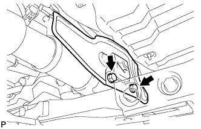
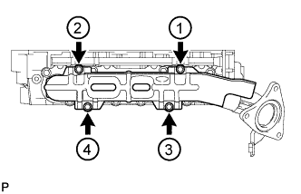
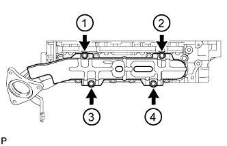
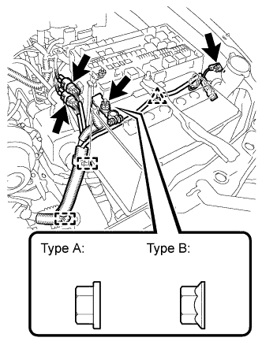
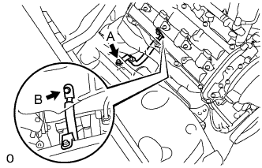
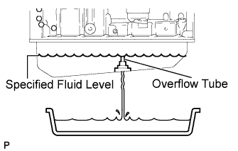

ENGINE ASSEMBLY > INSTALLATION |
| 1. REMOVE ENGINE STAND |
Attach an engine sling device and hang the engine with a chain block.
Remove the bolts and engine assembly from the engine stand.
| 2. INSTALL ENGINE ASSEMBLY |
Slowly lower the engine assembly into the engine compartment.
Attach the engine mounting insulators to the vehicle.
Install the 4 engine mounting insulator bolts.
| 3. INSTALL DRIVE PLATE AND RING GEAR SUB-ASSEMBLY |
 |
Using SST, hold the crankshaft.
Install the front drive plate spacer, drive plate and rear drive plate spacer to the crankshaft.
 |
Install and uniformly tighten 8 new bolts in the sequence shown in the illustration.
 |
Mark the upside of each drive plate installation bolt with paint.
Tighten the drive plate installation bolts another 90° as shown.
Check that the painted marks are now at a 90° angle to the upside.
| 4. INSTALL REAR NO. 1 ENGINE MOUNTING INSULATOR |
 |
Install the rear No. 1 engine mounting insulator with the 4 bolts.
| 5. INSTALL AUTOMATIC TRANSMISSION ASSEMBLY |
Install the automatic transmission (Click here).
| 6. INSTALL PROPELLER SHAFT ASSEMBLY |
 |
Align the matchmarks on the propeller shaft flange and transfer.
Connect the propeller shaft with the 4 washers and 4 nuts.
 |
Align the matchmarks on the propeller shaft flange and rear differential.
Install the propeller shaft with the 4 bolts, 4 washers and 4 nuts.
| 7. INSTALL TRANSFER HEAT INSULATOR |
 |
Install the insulator with the 4 bolts.
| 8. INSTALL FRONT PROPELLER SHAFT ASSEMBLY |
for 1VD-FTV:
 |
Align the matchmarks on the propeller shaft flange and differential.
Connect the propeller shaft with the 4 washers and 4 nuts.
 |
Align the matchmarks on the yoke and transfer flange.
Install the propeller shaft with the 4 washers and 4 nuts.
for 1GR-FE, 2UZ-FE and Center Grease Fitting type:
 |
Align the matchmarks on the propeller shaft flange and differential.
Connect the propeller shaft with the 4 washers and 4 nuts.
 |
Align the matchmarks on the propeller shaft flange and transfer flange.
Install the propeller shaft with the 4 washers and 4 nuts.
| 9. INSTALL PROPELLER SHAFT HEAT INSULATOR |
 |
Install the insulator with the 2 bolts.
| 10. INSTALL NO. 2 EXHAUST MANIFOLD HEAT INSULATOR |
Temporarily install the heat insulator with the 4 bolts.
 |
Uniformly tighten the 4 bolts in several steps, in the sequence shown in the illustration.
| 11. INSTALL NO. 1 EXHAUST MANIFOLD HEAT INSULATOR |
Temporarily install the heat insulator with the 4 bolts.
 |
Uniformly tighten the 4 bolts in several steps, in the sequence shown in the illustration.
| 12. INSTALL EXHAUST FRONT PIPE ASSEMBLY |
Install a new gasket and the front exhaust pipe to the exhaust manifold with 3 new nuts.
Connect the air fuel ratio sensor connector.
Connect the heated oxygen sensor connector.
Attach the heated oxygen sensor wire clamp.
| 13. INSTALL NO. 2 EXHAUST FRONT PIPE ASSEMBLY |
Install a new gasket and the front No. 2 exhaust pipe to the exhaust manifold LH with 3 new nuts.
Connect the air fuel ratio sensor connector.
Connect the heated oxygen sensor connector.
| 14. INSTALL EXHAUST CENTER PIPE ASSEMBLY |
Install the center exhaust pipe to the 3 exhaust pipe supports.
Install 2 new gaskets to the front exhaust pipe and front No. 2 exhaust pipe.
Install the 4 bolts.
| 15. INSTALL EXHAUST TAILPIPE ASSEMBLY |
Install the tailpipe to the 2 exhaust pipe supports.
Install a new gasket to the center exhaust pipe.
 |
Connect the tailpipe and center exhaust pipe with a new clamp.
| 16. CONNECT WIRE HARNESS |
 |
Connect the 2 clamps and 2 connectors to the engine room relay block.
Connect the wire harness and 2 clamps and install the nut.
Connect the wire harness clamp to the air injection control driver bracket.
Connect the ground wire and install the bolt.
Connect the 2 air injection control driver connectors.
 |
Connect the 3 clamps and ground wire and install the bolt.
Connect the 2 connector clamps to the engine room relay block. Then connect the 2 connectors.
Install the wire harness to the positive (+) battery terminal with the nut.
 |
Connect the purge line hose to the purge VSV.
 |
Connect the 4 connectors and clamp to the connector holder block.
 |
Install the ground wire and install the bolt.
Connect the clamp and ECM connector.
 |
w/ Winch:
Connect the winch ground wire and install the 2 bolts.
| 17. CONNECT NO. 1 WATER BY-PASS PIPE (w/ Air Cooled Transmission Oil Cooler) |
 |
Connect the water by-pass pipe to the cylinder head cover RH with the 2 bolts.
| 18. CONNECT WATER HOSE SUB-ASSEMBLY |
Connect the water hose.
 |
w/ Rear Heater:
Connect the water hoses labeled A and B.
w/o Rear Heater:
Connect the water hoses labeled A.
| 19. INSTALL NO. 2 FUEL HOSE |
for engine side:
 |
Connect the fuel hose to the No. 3 fuel pipe.
Attach the lock claws to the connector by pushing down on the cover, as shown in the illustration.
Attach the fuel hose clamp.
for body side:
 |
Connect the fuel hose to the fuel pipe.
| 20. CONNECT FUEL HOSE |
 |
Connect the fuel hose.
Install the fuel hose clamp.
| 21. INSTALL GENERATOR ASSEMBLY |
 |
Install the generator with the bolt and 2 nuts.
 |
Connect the generator connector.
Connect the generator wire with the nut.
Install the terminal cap.
Connect the harness bracket to the generator with the bolt.
| 22. CONNECT VANE PUMP ASSEMBLY |
 |
Connect the vane pump with the 2 bolts and nut.
 |
Connect the connector.
| 23. CONNECT COOLER COMPRESSOR ASSEMBLY |
 |
Connect the compressor. Then install it and the No. 1 compressor stay with the nut and 3 bolts.
Install the cooler refrigerant suction hose with the bolt.
Connect the connector.
| 24. INSTALL RADIATOR ASSEMBLY |
 |
Set the radiator bracket hooks to the radiator support holes.
Install the radiator with the 4 bolts.
 |
Connect the 2 oil cooler hoses.
| 25. INSTALL NO. 2 RADIATOR HOSE |
 |
Using needle-nose pliers, grip the claws of the clamps and slide the clamps to install the radiator hose.
| 26. INSTALL FAN SHROUD |
 |
Install the fan pulley to the water pump.
Place the shroud together with the cooling fan between the radiator and engine.
Temporarily install the cooling fan to the water pump with the 4 nuts. Tighten the nuts as much as possible by hand.
 |
Attach the claws of the shroud to the radiator as shown in the illustration.
Install the shroud with the 2 bolts.
Connect the oil cooler tube to the fan shroud with the 2 bolts.
w/ Air Cooled Transmission Oil Cooler:
Pass the hose through the flexible hose clamp and close the clamp as shown in the illustration.
Connect the reservoir hose to the upper side of the radiator tank.
|
Tighten the 4 nuts of the cooling fan.
| 27. INSTALL FAN AND GENERATOR V BELT |
 |
Set the V belt onto every part except the belt tensioner, as shown in the illustration.
Loosen the V belt by turning the belt tensioner counterclockwise.
Set the V belt to the belt tensioner.
 |
Check that the belt fits properly in the ribbed grooves.
 |
Check that the arrow on the belt tensioner is within area "A".
If the arrow is outside area "A", replace the fan and generator V belt.
| 28. INSTALL NO. 1 RADIATOR HOSE |
|
Using needle-nose pliers, grip the claws of the clamps and slide the clamps to install the radiator hose.
| 29. INSTALL AIR CLEANER ASSEMBLY |
 |
Install the air cleaner with the 3 bolts.
Connect the clamp and MAF connector.
| 30. INSTALL AIR CLEANER HOSE ASSEMBLY |
 |
Install the air cleaner hose so that the protrusion of the air cleaner cap aligns with the groove of the hose as shown in the illustration.
Tighten the 2 clamps.
Connect the vacuum transmitting hose.
Connect the No. 2 ventilation hose.
| 31. INSTALL HOOD SUB-ASSEMBLY |
 |
Install the hood with the 4 bolts.
Install the 2 hood supports with the 2 hood stay bolts.
| 32. ADJUST HOOD SUB-ASSEMBLY |
 |
Adjust the hood position.
Loosen the 4 hinge bolts of the hood.
Move the hood and adjust the clearance between the hood and front fender.
Tighten the 4 hinge bolts of the hood after the adjustment.
 |
Adjust the cushion rubber so that the height of the hood and fender are aligned.
Adjust the hood lock.
 |
Using a screwdriver, remove the hood lock nut cap as shown in the illustration.
 |
Loosen the 2 bolts and hood lock nut.
Adjust the hood lock position so that the striker can enter it smoothly.
Tighten the bolts and nut after the adjustment.
Install a new cap.
| 33. ADD ENGINE OIL |
Install a new gasket and the drain plug.
Add new engine oil.
| Oil Grade | Oil Viscosity (SAE) |
| API grade SL "Energy-Conserving", SM "Energy-Conserving" or ILSAC multigrade engine oil | 10W-30 (10W-30 is best choice for fuel economy and good starting in cold weather). |
| API grade SL or SM multigrade engine oil | 10W-30 |
| Item | Specified Condition |
| Drain and refill with oil filter change | 6.2 liters (6.6 US qts, 5.5 Imp. qts) |
| Drain and refill without oil filter change | 5.7 liters (6.0 US qts, 5.0 Imp. qts) |
| Dry fill | 7.1 liters (7.5 US qts, 6.2 Imp. qts) |
| 34. ADD ENGINE COOLANT |
Add engine coolant.
| Item | Specified Condition | |
| w/o Transmission oil cooler | w/o Rear Heater | 13.4 liters (14.2 US qts, 11.8 Imp. qts) |
| w/ Rear Heater | 16.3 liters (17.2 US qts, 14.3 Imp. qts) | |
| w/ Transmission oil cooler | w/o Rear Heater | 14.1 liters (14.9 US qts, 12.4 Imp. qts) |
| w/ Rear Heater | 16.9 liters (17.9 US qts, 14.9 Imp. qts) | |
 |
Slowly pour coolant into the radiator reservoir until it reaches the F line.
Install the radiator reservoir cap.
Press the inlet and outlet radiator hoses several times by hand, and then check the coolant level. If the coolant level is low, add coolant.
Install the radiator cap.
Start the engine and warm it up until the thermostat opens.
Maintain the engine speed at 2000 to 2500 rpm.
Press the inlet and outlet radiator hoses several times by hand to bleed air.
Stop the engine, and wait until the engine coolant cools down to the ambient temperature.
 |
Check that the coolant level is between the F and L lines. If the coolant level is below the L line, repeat all of the procedures above. If the coolant level is above the F line, drain coolant so that the coolant level is between the F and L lines.
| 35. CONNECT CABLE TO NEGATIVE BATTERY TERMINAL |
| 36. INSPECT FOR FUEL LEAK |
Connect the intelligent tester to the DLC3.
Turn the engine switch on (IG) and intelligent tester ON.
Enter the following menus: Powertrain / Engine and ECT / Active Test / Activate the Fuel Pump Speed Control.
Check that there are no fuel leaks after doing maintenance anywhere on the fuel system.
| 37. INSPECT FOR EXHAUST GAS LEAK |
| 38. INSPECT FOR COOLANT LEAK |
 |
Check that the engine coolant level is between the L and F lines when the engine is cold.
If the engine coolant is low, check for leaks and add "TOYOTA Super Long Life Coolant" or similar high quality ethylene glycol based non-silicate, non-amine, non-nitrite and non-borate coolant with long-life hybrid organic acid technology to the F line.
Remove the radiator cap, and check that the coolant level is up to the radiator filler hole.
| 39. INSPECT FOR OIL LEAK |
Start the engine. Make sure that there are no oil leaks from the area that was worked on.
| 40. INSPECT ENGINE OIL LEVEL |
Warm up the engine, then stop the engine and wait for 5 minutes.
Check that the engine oil level is between the low level and full level marks on the dipstick.
If low, check for leakage and add oil up to the full level mark.
| 41. CHECK FLUID LEVEL |
 |
Remove the overflow plug with the engine idling.
Check that fluid comes out of the overflow tube.
If fluid does not come out, proceed to the "Transmission Refill" procedures.
If fluid comes out, wait until the overflow slows to a trickle and proceed to the "Complete" procedures.
| 42. INSPECT SHIFT LEVER POSITION |
When moving the shift lever from P to R with the engine switch on (IG) and the brake pedal depressed, make sure that it moves smoothly and correctly into position.
Check that the shift lever does not stop when moving the shift lever from R to P, and check that the shift lever does not stick when moving the shift lever from D to S.
Start the engine and make sure that the vehicle moves forward after moving the shift lever from N to D and moves rearward after moving the shift lever to R.
If the operation cannot be performed as specified, inspect the park/neutral position switch assembly and check the shift lever assembly installation condition.
| 43. INSPECT IGNITION TIMING |
Warm up and stop the engine.
Allow the engine to warm up to a normal operating temperature.
When using the intelligent tester:
Connect the intelligent tester to the DLC3.
Start the engine and idle it.
Push the intelligent tester main switch ON.
Enter the following menus: Powertrain / Engine and ECT / Data List / Primary / IGN Advance.
Disconnect the intelligent tester from the DLC3.
 |
When not using the intelligent tester:
Remove the 2 nuts and V-bank cover.
Connect the tester probe of a timing light to the wire of the ignition coil connector for the No. 1 cylinder.
 |
Using SST, connect terminals 13 (TC) and 4 (CG) of the DLC3.
 |
Using the timing light, check the ignition timing.
Remove SST from the DLC3.
Disconnect the timing light from the engine.
Install the V-bank cover with the 2 nuts.
| 44. INSPECT ENGINE IDLE SPEED |
Warm up and stop the engine.
Allow the engine to warm up to a normal operating temperature.
When using the intelligent tester:
Connect the intelligent tester to the DLC3.
Race the engine at 2500 rpm for approximately 90 seconds.
Push the intelligent tester main switch ON.
Enter the following menus: Powertrain / Engine and ECT / Data List / Primary / Engine Speed.
Disconnect the intelligent tester from the DLC3.
 |
When not using the intelligent tester:
Using SST, connect a tachometer probe to terminal 9 (TAC) of the DLC3.
Race the engine at 2500 rpm for approximately 90 seconds.
Check the idle speed.
Disconnect the tachometer from the DLC3.
| 45. INSPECT CO/HC |
Warm up the engine.
Keep the engine speed at 2500 rpm for approximately 180 seconds.
 |
Insert the CO/HC meter testing probe at least 40 cm (1.31 ft.) into the tailpipe during idling.
Immediately check CO/HC concentration at idle and/or 2500 rpm.
If the CO/HC concentration does not comply with regulations, troubleshoot in the order given below.
Check the A/F sensor (Click here) and heated oxygen sensor (Click here) operation.
See the table below for possible causes, and then inspect and correct the applicable causes if necessary.
| CO | HC | Symptom | Cause |
| Normal | High | Rough idle |
|
| Low | High | Rough idle (Fluctuating HC reading) |
|
| High | High | Rough idle (Black smoke from exhaust) |
|
| 46. INSTALL V-BANK COVER SUB-ASSEMBLY |
 |
Attach the 2 V-bank cover hooks to the bracket.
Install the V-bank cover with the 2 nuts.
| 47. INSTALL FRONT FENDER APRON SEAL LH |
 |
Install the fender apron seal with the 4 clips.
| 48. INSTALL FRONT FENDER APRON SEAL LH (w/ KDSS) |
 |
Install the fender apron seal with the 3 clips.
| 49. INSTALL FRONT FENDER APRON SEAL REAR LH |
 |
Install the fender apron seal with the 4 clips.
| 50. INSTALL FRONT FENDER APRON SEAL FRONT RH |
 |
Install the fender apron seal with the 3 clips.
| 51. INSTALL FRONT FENDER APRON SEAL REAR RH |
 |
Install the fender apron seal with the 4 clips.
| 52. CONNECT RADIATOR SIDE DEFLECTOR LH |
 |
Connect the deflector with the 4 clips.
| 53. CONNECT RADIATOR SIDE DEFLECTOR RH (w/o Air Cooled Transmission Oil Cooler) |
 |
Connect the deflector with the 4 clips.
| 54. INSTALL TRANSMISSION OIL COOLER AIR DUCT (w/ Air Cooled Transmission Oil Cooler) |
 |
Install the oil cooler air duct with the 4 bolts in the sequence shown in the illustration.
| 55. INSTALL FRONT BUMPER COVER |
for Standard:
Install the front bumper (Click here).
w/ Winch:
Install the front bumper (Click here).
| 56. INSTALL RADIATOR GRILLE |
 |
Attach the 2 clips and 8 claws to install the radiator grille.
Install the 3 screws.
| 57. INSTALL FRONT BUMPER WINCH COVER SUB-ASSEMBLY (w/ Winch) |
| 58. INSTALL UPPER RADIATOR SUPPORT SEAL |
Install the radiator support seal with the 7 clips.

| 59. INSTALL COWL TOP VENTILATOR LOUVER SUB-ASSEMBLY |
Install the cowl top ventilator (Click here).
| 60. INSTALL NO. 2 ENGINE UNDER COVER |
 |
Install the No. 2 engine under cover with the 2 bolts.
| 61. INSTALL NO. 1 ENGINE UNDER COVER SUB-ASSEMBLY |
 |
Install the No. 1 engine under cover with the 10 bolts.
| 62. INSTALL FRONT FENDER SPLASH SHIELD SUB-ASSEMBLY LH |
 |
Push in the clip indicated by the arrow in the illustration to install the fender splash shield.
Install the 3 bolts and screw.
| 63. INSTALL FRONT FENDER SPLASH SHIELD SUB-ASSEMBLY RH |
| 64. INSTALL FRONT WHEEL |
| 65. INSPECT ENGINE COOLANT LEVEL |
|
Check that the engine coolant level is between the L and F lines when the engine is cold.
If the engine coolant is low, check for leaks and add "TOYOTA Super Long Life Coolant" or similar high quality ethylene glycol based non-silicate, non-amine, non-nitrite and non-borate coolant with long-life hybrid organic acid technology to the F line.
Remove the radiator cap, and check that the coolant level is up to the radiator filler hole.